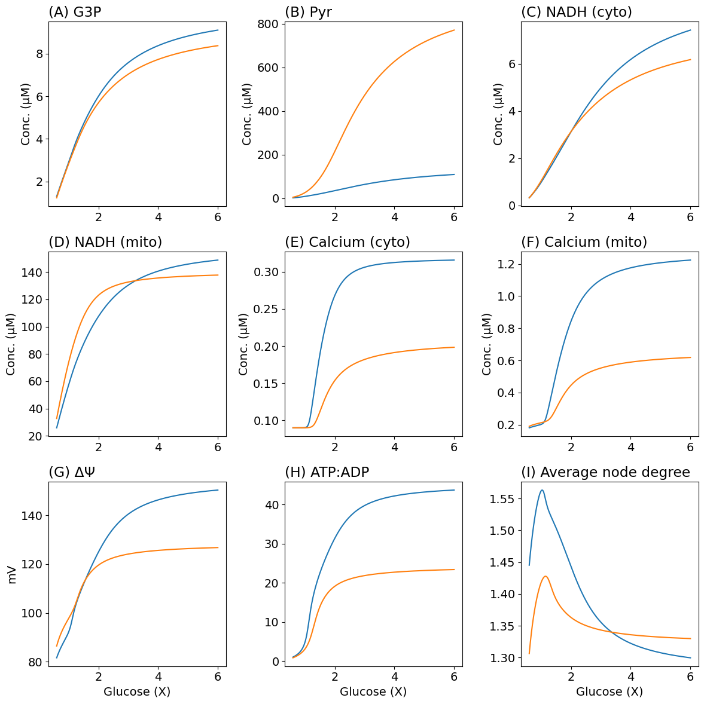
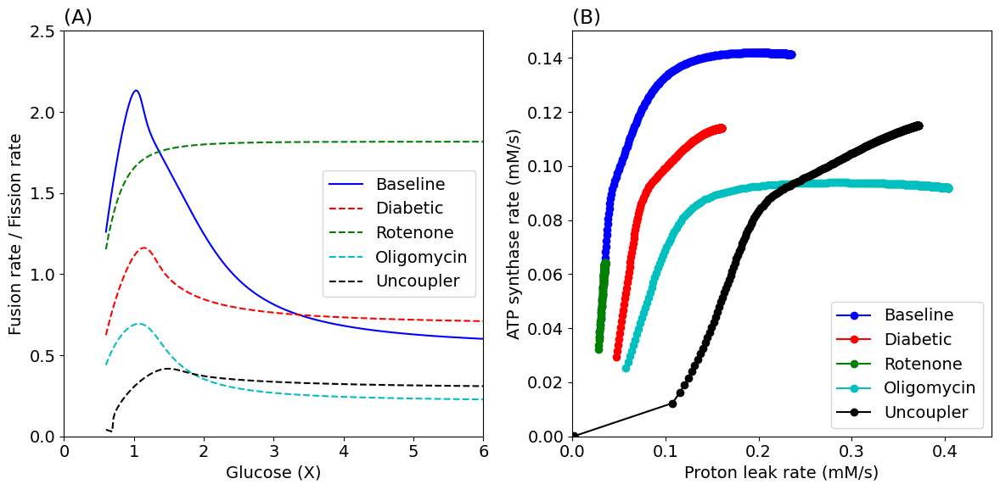

Figure 6 and 7
Contents
Figure 6 and 7#
using DifferentialEquations
using ModelingToolkit
using MitochondrialDynamics
using MitochondrialDynamics: GlcConst, VmaxPDH, pHleak, VmaxF1, VmaxETC, J_ANT, J_HL
using MitochondrialDynamics: G3P, Pyr, NADH_c, NADH_m, Ca_c, Ca_m, ΔΨm, ATP_c, ADP_c, degavg
using MitochondrialDynamics.Utils: second, μM, mV, mM, Hz, minute
import PyPlot as plt
rcParams = plt.PyDict(plt.matplotlib."rcParams")
rcParams["font.size"] = 14
# rcParams["font.sans-serif"] = "Arial"
# rcParams["font.family"] = "sans-serif"
┌ Info: Precompiling MitochondrialDynamics [1a231dcf-63c2-466e-8f46-4027ba595b90]
└ @ Base loading.jl:1662
14
glc = range(3.0mM, 30.0mM, length=301)
tend = 50minute
@named sys = make_model()
prob = SteadyStateProblem(sys, [])
SteadyStateProblem with uType Vector{Float64}. In-place: true
u0: 10-element Vector{Float64}:
0.057
0.001
0.0002
0.092
0.0029
0.0087
3.595
0.148
0.24
0.06
Figure 6#
pidx = Dict(k => i for (i, k) in enumerate(parameters(sys)))
idxGlc = pidx[GlcConst]
idxVmaxPDH = pidx[VmaxPDH]
idxpHleak = pidx[pHleak]
idxVmaxF1 = pidx[VmaxF1]
idxVmaxETC = pidx[VmaxETC]
function make_dm_prob(prob; rPDH=0.5, rETC=0.75, rHL=1.4, rF1=0.5)
p = copy(prob.p)
p[idxVmaxPDH] *= rPDH
p[idxpHleak] *= rHL
p[idxVmaxF1] *= rF1
p[idxVmaxETC] *= rETC
return remake(prob, p=p)
end
function make_rotenone_prob(prob; rETC=0.1)
p = copy(prob.p)
p[idxVmaxETC] *= rETC
return remake(prob, p=p)
end
function make_oligomycin_prob(prob; rF1=0.1)
p = copy(prob.p)
p[idxVmaxF1] *= rF1
return remake(prob, p=p)
end
function make_fccp_prob(prob; rHL=5)
p = copy(prob.p)
p[idxpHleak] *= rHL
return remake(prob, p=p)
end
function remake_glc(prob, g)
p = copy(prob.p)
p[idxGlc] = g
remake(prob; p=p)
end
remake_glc (generic function with 1 method)
prob_dm = make_dm_prob(prob)
sols = map(glc) do g
solve(remake_glc(prob, g), DynamicSS(Rodas5()))
end
solsDM = map(glc) do g
solve(remake_glc(prob_dm, g), DynamicSS(Rodas5()))
end
301-element Vector{SciMLBase.NonlinearSolution{Float64, 1, Vector{Float64}, Vector{Float64}, SteadyStateProblem{Vector{Float64}, true, Vector{Float64}, ODEFunction{true, ModelingToolkit.var"#f#460"{RuntimeGeneratedFunctions.RuntimeGeneratedFunction{(:ˍ₋arg1, :ˍ₋arg2, :t), ModelingToolkit.var"#_RGF_ModTag", ModelingToolkit.var"#_RGF_ModTag", (0x25abb4b4, 0x899674fe, 0x0cdfc48a, 0x7bf095de, 0x524d2778)}, RuntimeGeneratedFunctions.RuntimeGeneratedFunction{(:ˍ₋out, :ˍ₋arg1, :ˍ₋arg2, :t), ModelingToolkit.var"#_RGF_ModTag", ModelingToolkit.var"#_RGF_ModTag", (0xed8ec384, 0x66a3230c, 0x22abfae5, 0x2ec4972c, 0xe9bdd158)}}, LinearAlgebra.UniformScaling{Bool}, Nothing, Nothing, Nothing, Nothing, Nothing, Nothing, Nothing, Nothing, Nothing, Nothing, Vector{Symbol}, Symbol, ModelingToolkit.var"#generated_observed#465"{ODESystem, Dict{Any, Any}}, Nothing}, Base.Pairs{Symbol, Union{}, Tuple{}, NamedTuple{(), Tuple{}}}}, DynamicSS{Rodas5{0, true, Nothing, typeof(OrdinaryDiffEq.DEFAULT_PRECS), Val{:forward}, true, nothing}, Float64, Float64, Float64}, Nothing, Nothing}}:
[0.03274555470188028, 0.0003228734835951547, 0.00018969001572272557, 0.08648907954664815, 0.0012294442504587363, 0.0050215431520743625, 1.2687329171398407, 1.7063546300632266, 0.19073101655276795, 0.02194105549260322]
[0.034809051353775725, 0.00034925624539875843, 0.00019122222655151697, 0.08726689760703019, 0.0013064646122721362, 0.005571495358072913, 1.3643705129024528, 1.6029500839716613, 0.1937813020427822, 0.023044397747189242]
[0.03685066613403082, 0.0003762018042568729, 0.00019265814282192165, 0.08799552169122986, 0.0013828177040717147, 0.006150678522431862, 1.4590800804174056, 1.5050833614128942, 0.1965263184334082, 0.024078178970897764]
[0.038872280526441365, 0.00040373592842522636, 0.00019401089357565324, 0.08868166257906683, 0.001458594872383704, 0.006760422854006314, 1.5529133624237166, 1.4122673861493933, 0.19900445216288962, 0.025062941654492046]
[0.04087491473885366, 0.0004318752748861852, 0.00019529086972188, 0.08933062719458502, 0.001533855485001992, 0.007401983141666339, 1.6458884129637903, 1.3241200372294122, 0.20126002169370946, 0.025990685377406703]
[0.04285901006196652, 0.000460629804466247, 0.00019650650581357485, 0.08994671849933117, 0.0016086374194809812, 0.008076570317883155, 1.7380010402679202, 1.2403330012056006, 0.20331393723907973, 0.026877986773580213]
[0.044824612650422, 0.000490004350350519, 0.00019766480130735644, 0.09053350184563802, 0.0016829638727567033, 0.0087853722964896, 1.829232171086166, 1.1606513108366774, 0.20519810283989343, 0.027716423252097742]
[0.046771497463711995, 0.0005199996762390423, 0.0001987716816596786, 0.0910939891502162, 0.0017568479390451413, 0.009529568320030617, 1.9195527416803904, 1.0848594375080534, 0.2069283806873673, 0.02851437920717818]
[0.04869925438226209, 0.0005506132147329329, 0.00019983225713613863, 0.09163077048259952, 0.0018302957791096188, 0.010310339201699681, 2.0089270242756765, 1.0127715682337417, 0.2085214320674512, 0.029273916180614565]
[0.05060734958384702, 0.0005818395989233056, 0.00020085101431081484, 0.09214611091960014, 0.00190330887066181, 0.011128874865101803, 2.097314926352275, 0.9442246469592624, 0.20999113216255197, 0.02999706868958979]
[0.052495170259148564, 0.0006136710567174004, 0.0002018319622894285, 0.09264202386769094, 0.0019758856427527917, 0.011986380037438338, 2.184673592052416, 0.8790732958395717, 0.2113493511448621, 0.030685500445980125]
[0.05436205782082521, 0.0006460977120826232, 0.0002027787480885491, 0.09312032813443856, 0.0020480226877890267, 0.01288407863244836, 2.2709585132882792, 0.8171860476665784, 0.2125987613814838, 0.03134948174727558]
[0.05620733299093841, 0.0006791078220389386, 0.0002036947510049051, 0.09358269363749314, 0.0021197156786722155, 0.013823217165554184, 2.356124284214079, 0.7584425130657785, 0.2137634866660703, 0.03197187323629088]
⋮
[0.1376570691553519, 0.006115389311165725, 0.0006164066042096479, 0.12671301623433748, 0.008340385615433089, 0.7624145943614836, 4.308133644084779, 0.007356945768898405, 0.19855052285150007, 0.0248855176081686]
[0.13766869464041206, 0.006120730654396614, 0.0006165696668563003, 0.1267194814191867, 0.008344263252379828, 0.7632644968532556, 4.308164490347598, 0.007354618971616737, 0.1985397240158102, 0.024881182570694892]
[0.1376802203774098, 0.006126035312817788, 0.0006167313954517258, 0.12672589326592673, 0.008348112096504625, 0.764107873693721, 4.308195073090613, 0.007352312404061033, 0.19852900999226003, 0.024876882422380377]
[0.13769164755093624, 0.0061313036138586465, 0.00061689180500121, 0.12673225238092573, 0.008351932433150796, 0.7649447914676212, 4.308225395436202, 0.007350025821741007, 0.19851837982121703, 0.024872616864206082]
[0.13770297732748688, 0.006136535881466987, 0.0006170509102938687, 0.12673855936170278, 0.008355724544165107, 0.7657753159301997, 4.308255460459005, 0.0073477589839837576, 0.19850783255314858, 0.024868385606446955]
[0.13771421085580163, 0.006141732436150197, 0.0006172087259064617, 0.12674481479708685, 0.008359488707948289, 0.7665995120190906, 4.308285271186831, 0.007345511653860114, 0.19849736734653783, 0.02486418820518036]
[0.13772534926719748, 0.006146893595015971, 0.0006173652662071528, 0.12675101926737253, 0.008363225199504677, 0.7674174438659453, 4.308314830601532, 0.00734328359811266, 0.19848698334490567, 0.024860024266466777]
[0.13773639367589358, 0.006152019671812448, 0.0006175205453591526, 0.126757173344472, 0.008366934290491089, 0.768229174807979, 4.308344141639866, 0.007341074587085588, 0.19847667974285227, 0.024855893335951035]
[0.13774734517932902, 0.0061571109769679505, 0.0006176745773243418, 0.12676327759206418, 0.008370616249264868, 0.7690347673992399, 4.308373207194346, 0.007338884394655859, 0.19846645558024636, 0.024851795241429282]
[0.13775820485847368, 0.006162167817630202, 0.0006178273758667644, 0.1267693325657408, 0.008374271340931183, 0.7698342834217604, 4.308402030114054, 0.007336712798166088, 0.19845631008217632, 0.02484772952601311]
[0.13776897377813227, 0.006167190497705039, 0.0006179789545560784, 0.12677533881314884, 0.008377899827389491, 0.7706277838965376, 4.308430613205453, 0.007334559578359077, 0.19844624244846862, 0.024843695798366382]
[0.13777965298724154, 0.006172179317894697, 0.0006181293267709212, 0.12678129687413042, 0.00838150196737928, 0.7714153290943362, 4.3084589592331675, 0.007332424519313647, 0.19843625182581073, 0.024839693778931596]
function plot_fig6(sols, solsDM, glc; figsize=(12, 12), tight=true)
glc5 = glc ./ 5
td = getindex.(sols, ATP_c) ./ getindex.(sols, ADP_c)
tdDM = getindex.(solsDM, ATP_c) ./ getindex.(solsDM, ADP_c)
fig, ax = plt.subplots(3, 3; figsize)
ax[1, 1].plot(glc5, getindex.(sols, G3P) .* 1000, label="Baseline")
ax[1, 1].plot(glc5, getindex.(solsDM, G3P) .* 1000, label="Diabetic")
ax[1, 1].set_title("(A) G3P", loc="left")
ax[1, 1].set(ylabel="Conc. (μM)")
ax[1, 2].plot(glc5, getindex.(sols, Pyr) .* 1000, label="Baseline")
ax[1, 2].plot(glc5, getindex.(solsDM, Pyr) .* 1000, label="Diabetic")
ax[1, 2].set_title("(B) Pyr", loc="left")
ax[1, 2].set(ylabel="Conc. (μM)")
ax[1, 3].plot(glc5, getindex.(sols, NADH_c) .* 1000, label="Baseline")
ax[1, 3].plot(glc5, getindex.(solsDM, NADH_c) .* 1000, label="Diabetic")
ax[1, 3].set_title("(C) NADH (cyto)", loc="left")
ax[1, 3].set(ylabel="Conc. (μM)")
ax[2, 1].plot(glc5, getindex.(sols, NADH_m) .* 1000, label="Baseline")
ax[2, 1].plot(glc5, getindex.(solsDM, NADH_m) .* 1000, label="Diabetic")
ax[2, 1].set_title("(D) NADH (mito)", loc="left")
ax[2, 1].set(ylabel="Conc. (μM)")
ax[2, 2].plot(glc5, getindex.(sols, Ca_c) .* 1000, label="Baseline")
ax[2, 2].plot(glc5, getindex.(solsDM, Ca_c) .* 1000, label="Diabetic")
ax[2, 2].set_title("(E) Calcium (cyto)", loc="left")
ax[2, 2].set(ylabel="Conc. (μM)")
ax[2, 3].plot(glc5, getindex.(sols, Ca_m) .* 1000, label="Baseline")
ax[2, 3].plot(glc5, getindex.(solsDM, Ca_m) .* 1000, label="Diabetic")
ax[2, 3].set_title("(F) Calcium (mito)", loc="left")
ax[2, 3].set(ylabel="Conc. (μM)")
ax[3, 1].plot(glc5, getindex.(sols, ΔΨm) .* 1000, label="Baseline")
ax[3, 1].plot(glc5, getindex.(solsDM, ΔΨm) .* 1000, label="Diabetic")
ax[3, 1].set_title("(G) ΔΨ", loc="left")
ax[3, 1].set(xlabel="Glucose (X)", ylabel="mV")
ax[3, 2].plot(glc5, td, label="Baseline")
ax[3, 2].plot(glc5, tdDM, label="Diabetic")
ax[3, 2].set_title("(H) ATP:ADP", loc="left")
ax[3, 2].set(xlabel="Glucose (X)")
ax[3, 3].plot(glc5, getindex.(sols, degavg), label="Baseline")
ax[3, 3].plot(glc5, getindex.(solsDM, degavg), label="Diabetic")
ax[3, 3].set_title("(I) Average node degree", loc="left")
ax[3, 3].set(xlabel="Glucose (X)")
fig.set_tight_layout(tight)
return fig
end
plot_fig6 (generic function with 1 method)
fig6 = plot_fig6(sols, solsDM, glc);

# Uncomment if pdf file is required
# fig6.savefig("Fig6.tif", dpi=300, format="tiff", pil_kwargs=Dict("compression" => "tiff_lzw"))
Figure 7#
prob_fccp = make_fccp_prob(prob)
prob_rotenone = make_rotenone_prob(prob)
prob_oligomycin = make_oligomycin_prob(prob)
solsFCCP = map(glc) do g
solve(remake_glc(prob_fccp, g), DynamicSS(Rodas5()))
end
solsRot = map(glc) do g
solve(remake_glc(prob_rotenone, g), DynamicSS(Rodas5()))
end
solsOligo = map(glc) do g
solve(remake_glc(prob_oligomycin, g), DynamicSS(Rodas5()))
end
301-element Vector{SciMLBase.NonlinearSolution{Float64, 1, Vector{Float64}, Vector{Float64}, SteadyStateProblem{Vector{Float64}, true, Vector{Float64}, ODEFunction{true, ModelingToolkit.var"#f#460"{RuntimeGeneratedFunctions.RuntimeGeneratedFunction{(:ˍ₋arg1, :ˍ₋arg2, :t), ModelingToolkit.var"#_RGF_ModTag", ModelingToolkit.var"#_RGF_ModTag", (0x25abb4b4, 0x899674fe, 0x0cdfc48a, 0x7bf095de, 0x524d2778)}, RuntimeGeneratedFunctions.RuntimeGeneratedFunction{(:ˍ₋out, :ˍ₋arg1, :ˍ₋arg2, :t), ModelingToolkit.var"#_RGF_ModTag", ModelingToolkit.var"#_RGF_ModTag", (0xed8ec384, 0x66a3230c, 0x22abfae5, 0x2ec4972c, 0xe9bdd158)}}, LinearAlgebra.UniformScaling{Bool}, Nothing, Nothing, Nothing, Nothing, Nothing, Nothing, Nothing, Nothing, Nothing, Nothing, Vector{Symbol}, Symbol, ModelingToolkit.var"#generated_observed#465"{ODESystem, Dict{Any, Any}}, Nothing}, Base.Pairs{Symbol, Union{}, Tuple{}, NamedTuple{(), Tuple{}}}}, DynamicSS{Rodas5{0, true, Nothing, typeof(OrdinaryDiffEq.DEFAULT_PRECS), Val{:forward}, true, nothing}, Float64, Float64, Float64}, Nothing, Nothing}}:
[0.024410892959614818, 0.0002930276837857176, 0.0002246817094296352, 0.10418618172967223, 0.0011803568552498443, 0.0019507542762692608, 1.1061317678489815, 1.8938380164878257, 0.16803110056581042, 0.015223860156997015]
[0.026097752499034215, 0.00031771335269105443, 0.0002269606736236211, 0.10533406484805674, 0.0012593425480315979, 0.002157207378203462, 1.1976969267239614, 1.7863594440066273, 0.1711334471757533, 0.016012033779044033]
[0.02776630387311527, 0.0003427902581570605, 0.00022910117850889327, 0.10641169446877621, 0.0013373223075075322, 0.002371463013138301, 1.288165878707547, 1.6849536645964585, 0.17388830737323752, 0.016745441252004244]
[0.029419901751927952, 0.00036830618871672345, 0.0002311254405689417, 0.1074303382716707, 0.0014144690474744896, 0.002593855424289205, 1.377668238621572, 1.5889445105682176, 0.17635307964869065, 0.0174234147942827]
[0.031060703056210295, 0.00039429483963079426, 0.00023305033791076054, 0.10839855376696414, 0.001490897859459361, 0.002824631455412497, 1.4662770978101347, 1.4978217843424393, 0.1785694365269946, 0.018060619938157888]
[0.032690079983243664, 0.0004207803421816489, 0.00023488909440645103, 0.1093230426233773, 0.0015666859765764108, 0.0030639770943434595, 1.554029032977674, 1.4111875645123648, 0.1805735631648818, 0.01864822828221824]
[0.034308874819303774, 0.0004477800515475333, 0.0002366523407510273, 0.11020918876820025, 0.0016418850826607624, 0.0033120338476080318, 1.6409363217239545, 1.328722715073428, 0.18239073907359335, 0.01919812177485716]
[0.03591756428349285, 0.00047530634149892543, 0.00023834881444521308, 0.1110614131916815, 0.0017165292412020642, 0.0035689093373513867, 1.726994708288371, 1.2501650610063435, 0.1840410212781807, 0.019717363866330086]
[0.03751636945795748, 0.000503367803089796, 0.00023998583977320252, 0.1118834170188052, 0.001790640187378774, 0.003834684440999479, 1.812188493251919, 1.175294650289987, 0.18554667244014922, 0.020195099822715848]
[0.03910533160297716, 0.0005319700703323611, 0.0002415696681424879, 0.11267835360507766, 0.0018642309647845757, 0.004109418271104116, 1.896493941793735, 1.1039235037004231, 0.18691983838601506, 0.020642092972928718]
[0.04068436583172789, 0.0005611164040138691, 0.00024310572678327242, 0.11344895398165741, 0.0019373084858137774, 0.00439315175589494, 1.9798815941199366, 1.0358883077937304, 0.18817041054974742, 0.021065789610258175]
[0.0422532999950123, 0.0005908081138915121, 0.0002445988056539952, 0.1141976207568484, 0.002009875370798794, 0.0046859102846819435, 2.0623178336014942, 0.9710450962321219, 0.18931567258240678, 0.02145145204747239]
[0.04381190344501067, 0.0006210448700293454, 0.0002460532017806926, 0.11492650018244044, 0.0020819312910328853, 0.004987705711557448, 2.143765935984258, 0.9092653089801512, 0.19036031379290716, 0.021810963336537578]
⋮
[0.16407779130926256, 0.007867030887181544, 0.0004298930789068666, 0.16794395963912762, 0.007965160185588408, 0.13112446658732052, 4.1657631571882625, 0.021814236112477414, 0.122935343821065, 0.006868194317747851]
[0.1641221645172652, 0.007875036948636513, 0.0004299580873573407, 0.16795437357612164, 0.007968798180959183, 0.13131490753806815, 4.165807813272412, 0.021808559371493074, 0.12291024824584576, 0.0068648303308517155]
[0.16416615234618842, 0.007882986355623445, 0.0004300225480696058, 0.16796469279772833, 0.007972409134900243, 0.13150409498142177, 4.165852080907702, 0.02180293270422025, 0.12288537453554482, 0.006861497272214543]
[0.16420975934951582, 0.007890879631543958, 0.00043008646740485824, 0.1679749184898084, 0.007975993315722471, 0.13169203925623835, 4.165895964801553, 0.021797355494261886, 0.12286071870620377, 0.006858194087253695]
[0.16425299001320212, 0.007898717294027472, 0.0004301498516298469, 0.1679850518193556, 0.007979550988444628, 0.13187875060728088, 4.165939469587598, 0.02179182713504461, 0.12283627848951911, 0.006854920592656716]
[0.16429584875686706, 0.007906499855001704, 0.0004302127069185837, 0.16799509393485984, 0.007983082414840992, 0.13206423918598267, 4.165982599827107, 0.02178634702962543, 0.12281205225888511, 0.006851676919914335]
[0.16433833993496602, 0.007914227820762244, 0.0004302750393540205, 0.168005045966662, 0.007986587853488158, 0.1322485150512134, 4.166025360010386, 0.021780914590502624, 0.1227880374317989, 0.006848462692342503]
[0.1643804678379373, 0.007921901692041327, 0.0004303368549296832, 0.16801490902730062, 0.007990067559811095, 0.13243158817005007, 4.1660677545581395, 0.021775529239431664, 0.12276423148002205, 0.006845277546828557]
[0.1644222366933251, 0.007929521964075762, 0.00043039815955128177, 0.1680246842118512, 0.007993521786128464, 0.1326134684185367, 4.166109787822803, 0.02177019040724466, 0.12274063191176099, 0.0068421211249088615]
[0.16446365066688, 0.007937089126673966, 0.0004304589590382741, 0.16803437259825751, 0.007996950781697154, 0.1327941655824505, 4.1661514640898405, 0.02176489753367491, 0.12271723625769028, 0.0068389930658550495]
[0.16450471386363796, 0.007944603664282276, 0.00043051925912540443, 0.16804397524765594, 0.008000354792756119, 0.13297368935806148, 4.166192787579024, 0.021759650067184718, 0.12269404209897647, 0.006835893021327521]
[0.16454543032897692, 0.007952066056050333, 0.00043057906546420843, 0.16805349320469234, 0.008003734062569495, 0.13315204935289715, 4.166233762445667, 0.021754447464797617, 0.12267104706219567, 0.006832820652988675]
function plot_fig7(sols, solsDM, solsFCCP, solsRot, solsOligo, glc;
figsize=(12, 6), tight=true
)
# Gather ATP synthesis rate (fusion) and proton leak rate (fission)
jHL_baseline = getindex.(sols, J_HL)
jANT_baseline = getindex.(sols, J_ANT)
ff_baseline = jANT_baseline ./ jHL_baseline
jHL_dm = getindex.(solsDM, J_HL)
jANT_dm = getindex.(solsDM, J_ANT)
ff_dm = jANT_dm ./ jHL_dm
jHL_fccp = getindex.(solsFCCP, J_HL)
jANT_fccp = getindex.(solsFCCP, J_ANT)
ff_fccp = jANT_fccp ./ jHL_fccp
jHL_rot = getindex.(solsRot, J_HL)
jANT_rot = getindex.(solsRot, J_ANT)
ff_rot = jANT_rot ./ jHL_rot
jHL_oligo = getindex.(solsOligo, J_HL)
jANT_oligo = getindex.(solsOligo, J_ANT)
ff_oligo = jANT_oligo ./ jHL_oligo
glc5 = glc ./ 5
fig, ax = plt.subplots(1, 2; figsize)
ax[1].plot(glc5, ff_baseline, "b-", label="Baseline")
ax[1].plot(glc5, ff_dm, "r--", label="Diabetic")
ax[1].plot(glc5, ff_rot, "g--", label="Rotenone")
ax[1].plot(glc5, ff_oligo, "c--", label="Oligomycin")
ax[1].plot(glc5, ff_fccp, "k--", label="Uncoupler")
ax[1].set(xlabel="Glucose (X)", ylabel="Fusion rate / Fission rate", xlim=(0.0, 6.0), ylim=(0.0, 2.5))
ax[1].set_title("(A)", loc="left")
ax[1].legend()
ax[2].plot(jHL_baseline, jANT_baseline, "bo-", label="Baseline")
ax[2].plot(jHL_dm, jANT_dm, "ro-", label="Diabetic")
ax[2].plot(jHL_rot, jANT_rot, "go-", label="Rotenone")
ax[2].plot(jHL_oligo, jANT_oligo, "co-", label="Oligomycin")
ax[2].plot(jHL_fccp, jANT_fccp, "ko-", label="Uncoupler")
ax[2].set(xlabel="Proton leak rate (mM/s)", ylabel="ATP synthase rate (mM/s)", xlim=(0.0, 0.45), ylim=(0.0, 0.15))
ax[2].set_title("(B)", loc="left")
ax[2].legend()
fig.set_tight_layout(tight)
return fig
end
plot_fig7 (generic function with 1 method)
fig7 = plot_fig7(sols, solsDM, solsFCCP, solsRot, solsOligo, glc);

# Uncomment if pdf file is required
# fig7.savefig("Fig7.tif", dpi=300, format="tiff", pil_kwargs=Dict("compression" => "tiff_lzw"))